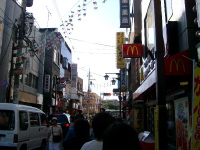
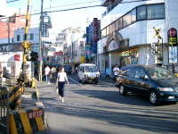
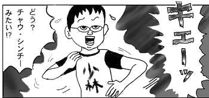
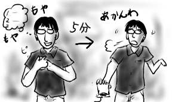
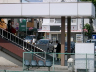
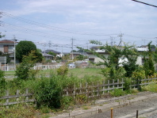
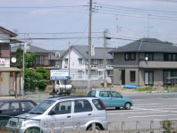
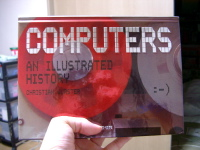

冷蔵庫には アップルパイ
食べ損なった アップルパイ
賞味期限は ぎりぎりオーバー
油断はできない アップルパイ
---
翌朝 取り出す アップルパイ
会社で食べよう アップルパイ
遅刻しそうだ 飛び出せ急げ
机の上には アップルパイ
---
置きっぱなしの アップルパイ
室温上昇 アップルパイ
帰宅後開封 酸っぱい匂い
ゴミ箱行きだよ アップルパイ
---
『ぼくのアップルパイ』 -完-
※)『ぼくのアップルパイ』は事実を元にしたフィクションです。
冷蔵庫には アップルパイ
食べ損なった アップルパイ
賞味期限は ぎりぎりオーバー
油断はできない アップルパイ
---
翌朝 取り出す アップルパイ
会社で食べよう アップルパイ
遅刻しそうだ 飛び出せ急げ
机の上には アップルパイ
---
置きっぱなしの アップルパイ
室温上昇 アップルパイ
帰宅後開封 酸っぱい匂い
ゴミ箱行きだよ アップルパイ
---
『ぼくのアップルパイ』 -完-
※)『ぼくのアップルパイ』は事実を元にしたフィクションです。
午前中に通販を頼んでいたROVOの「TONIC2001」が届きました。USAでのライブCD2枚組です。頼んでいた事をすっかり忘れてましたが、さっそく開封して目覚ましに聴いてみるとこれがすごい。聴いているうちにぐんぐんと気持ちが高揚していきます。圧倒的。
なんだか行き詰まった(人生が)ので、「少林サッカー」を見にワーナー・マイカル・シネマズ板橋まで出かけました。場所は東武東上線沿線になるのですが、狭い路地や古い商店街の町並みと、新興住宅や郊外大型ショッピングセンターがいい具合に溶け合ったなんとも言えない雰囲気があって割と好きです(歴史的経緯はよく知りませんが)。古い商店街というと、老人だけで切り盛りしていて、店主が死んで行く度に店が閉鎖されていくような滅びのイメージしか浮かばない地方出身者にとって、新しさも取り入れて人でにぎわう古い商店街というとそれだけでファンタジーの世界のように思えます。前にも一度来たことがあるのですが、まぁ思い出供養みたいなもんです。
 で、実際の本編ですが、これはすごい！画面で次々ととんでもないことが起こっていきます。やりすぎ周 星馳(チャウ・シンチー)が殴られる！飛ぶ！蹴る！断じてサッカー映画ではありません。だって、そもそもサッカーやってないし。これは、でたらめアクションコメディであり、恋愛映画です。試合とは死合いであり、敵(敵！)を倒すために技を駆使して闘っているのであって、つまらないサッカールールは丸っきり無視。人も飛ぶ飛ぶ！いやぁ、すばらしくエンターティメント娯楽超大作で、ゲラゲラお腹いっぱいです。これは少林拳を身に付けなければなりませんな！
帰宅して遅めの夕飯を食べていると、何やらW.C.(トイレ風表記←頑固に続けます)が日本VSロシアで盛り上がっているらしく、近所の民家から歓声やら拍手やらが聞こえて来ます。他のことで歓声をあげたら近所迷惑ということになるのにサッカーだと許されるというのは、普段ろくに授業を受けてないヤンキーが卒業式で泣いてみたり、普段飼育小屋の掃除を嫌がってやらないくせに生き物が死んだら可愛そうと騒いでみたりするような、そういう世の中の裏ルールを感じるね(ドクロ)。
僕は中学時代、冬のクラスマッチ(男子はサッカー)で、クラスのみんなから「クラスの勝利のために、出場しないでくれ」という申し入れを快諾した過去を持っておりますので、僕がサッカーに興味を持たないことで世の中はうまく回っているはずなのです。今さら歩み寄ろうだなんて、そんなバカな考え起こすはずもございません。
今日は出かけましたよ。
評判になってる界のアルバム「観」を買いました。基本的にはインプロヴィゼーション主体のインストバンドなのですが、フレーズが短くループする中、ラップとも呪文とも取れる不思議なボーカルがかぶさってきます。歌ではなく、あくまで楽器としての声を追求した不思議な節回しと言葉の羅列。普段の僕の好みで言えばこのようなボーカルの導入は拒否反応を示すと思うのですが、界の場合は不思議と背景のループシーケンスに溶け込んでいて違和感は感じませんでした。かなり聴いていて気持ちの良いアルバムで評判になるのも納得です。
SONY CLIEの本日新発売モデルであるところのPEG-T650をついでに見て来ましたよ。
うわー！これ何か欲しいかもよ！(単純)
本体も小さくて薄いし、MacOSXでのHotSyncにも(別売ソフトでというのが納得できないけれども)対応したし、音楽再生でmp3も聴けるし、なんかサイドのBackボタンが便利だし、なかなかによさそうです。さっそく使用シーンを妄想するぞ！(ホワワワン)
…mp3プレイヤで十分では(陥りがち)。
昨日は早めに床についたので更新できませんでした。普段なら平日は3〜4時間睡眠で過ごし、週末に足りない分をガチンコ睡眠で取るというサイクルなのですが、今週はちょっと早目に力つきてしまいました。睡眠時間が足りなくなると、身体がとてもだるくなり、それに引きづられてどんどんと心も悪い方へ悪い方へと突き進んで行きます。 やっぱり疲れた時は睡眠ですよね。
というわけで今日は比較的すっきりとした気分で1日を過ごせた、わけでもなく、出社すると同じチームの人は全員こぞってW.C.(トイレ風表記)観戦で有給休暇になっており、一気にやる気も鎮火。非常にグダグダとした1日を過ごしました。やっぱり睡眠なんかでどうにかなるもんじゃないよね(前段落と矛盾)。
グダグダついでなので(そんなついではありません)、会社帰りに久しぶりにBook offへ寄りました。乙一『石の目』(集英社ノベルズ)、緑川ゆき『あかく咲く声1-3』(花とゆめコミックス)なんかをほぼ100円で手に入れました。ここまで安いと逆に作者に申し訳ない気がして来ます。
帰りはBook off前のラーメン屋で飯を食ったのですが、創業昭和24年とか、そういうことが堂々と書かれている割には、スープは異様に化学調味料たっぷりで舌がしびれてきました。おまけになんか異様に塩辛いし。ラーメン一杯と餃子でもうお腹一杯になってしまったのですが、食ってる最中、隣に80歳くらいのお婆ちゃんを含む家族連れが現れ、普通にラーメンと餃子を頼んでいた時には「大丈夫か！」と本気で心配になりました。戦中戦後の淘汰圧をくぐり抜けて来た個はやっぱり尋常じゃないのかと改めて思いました(失礼)。
おまけ：公開終わり(後悔したから)
歯科検診を受けました。
僕は、去年くらいから右上の親不知の前面に米粒くらいなら平気で隠れんぼできるような大き目の穴が穿たれています。今回の検診でこれが発見されると「治療しろ！」と言われる可能性は濃厚なため、割とドキドキしながらの受診だったのです(素直に通院しましょう)。
ところが、歯科医は僕の口内を眺めまわした挙げ句に「処置歯はありますけど、他は今のところ問題ないですね。歯周病も今のところ大丈夫です」とキッパリ言い放ちました。ふ、節穴(文字通り)！
その後、歯科衛生士さんに歯の磨き方などのレクチャアを受けました。今は「糸楊枝」とは言わないで「デンタルフロス」とかいうカッコイイ横文字で呼ぶのですね。最初「デンタルフロスをたまに使うといいですよ」と言われても何のことだかサッパリ分かりませんでした。昔は「糸楊枝は歯の隙間が広がるから使っちゃダメ」と言われていた気がするので、だから呼び方を変えたのでしょうか(余計な詮索)。
歯磨きレクチャアの終わりに「何か気になることとかありますか？」と訪ねられたので、「右上の親不知がですね…」と言うと、歯科衛生士さんはペンライトとミラーを取り出して確認してくれました。「ちょっと黒くなってる感じはしますけど、すぐ治療が必要とかいうものでもないですし、大丈夫ですよ」とニッコリ言い放ちました。セ、セキュリティホール(文字通り)！
というわけで、問題ないそうなので通院はなしの方向で検討したいと思います(素直に通院しましょう)。
今日はどうも？地元さいたま新都心でW.C.(トイレ風表記)の日本の試合？が行われるらしく？、18時を回った時点ですでに9割以上の人間がフロアから消えていました。サッカー観戦率ってそんな高いのか！と驚きを隠せません。いいところ行って5割くらいだろうと思ってたんですが認識が甘過ぎましたか。現代版の徴兵制だよ！
興味がわいたので次のような計算をしてみました。
前回のフランスでのワールドカップでは約300万人の観客動員数だったそうです。1ヶ月間、連日開催されているとして1日あたりの観客動員数は10万人程度です。対してオタクの祭典コミックマーケット(以下コミケ)も3日間で約30万人の来場者数だそうですから、ワールドカップとコミケの1日当たりの動員数はほぼ同じと考えてよいでしょう。ワールドカップはコミケ程度のイベントです。
ということは、やり方によってはコミケの日にフロアから9割の人が消えるという現象も可能なはずです。1ヶ月間、オタク先進国の韓国と同時開催し、その模様を連日TV放送すればいいのです。
今日の試合を観戦に行く人は、15時の段階ですでに青いユニフォームに着替えてウキウキと仕事をしていたのですが、それもコスプレと同じと考えていればすんなり納得がいきます。コミケ会場の外で勘違いさんがコスプレしてうろつくということもよくあることだからです。
ということを一人考えてほくそ笑んでましたが、考えてみるとコミケが開催されるのは全国的な休日(盆と年末)なので、フロアに人間がいない率はほぼ100%ではありませんか。コミケ圧勝(絶対違う)！
ちなみに僕の中でサッカーとはsuckerと書きます(注：英語ではフットボールです)。
会社帰りにスーパーに寄って半額シール付きのカツオ刺身を一本釣り！200円ちょいで季節の刺身が食べられるのはいいねぇ(いいよね)。いくら美味しくたって、半額だって、季節はずれじゃぁねぇ(今さら「マタンゴ」)。
美味しくいただくために、にんにくを刻み、ついでに刺身に同梱パックの大葉を取り出して刻んでおきます。そのままだと処理に困る大葉も、こうしておくことで薬味として利用可能です。しょうが、にんにく、大葉を適当に刺身で包んで醤油につけてほかほかご飯といただく、コレ。ンマーイ。
もっとも、家にある醤油は賞味期限が今年の4月で切れているので多少不安でしたが、なんとか大丈夫でした。蓋を開けた時はアルコールのイッちゃったヤバそうな匂いがしましたが、少量なら問題ないようです(あります)。
しかし、刺身の入っていた容器は、普通の発砲スチロールトレイではなく、透明プラスチックに模様の入った立派な皿だったため、捨てるに捨てられないのは貧乏性すぎですか。
(昨日のつづき)昼前に起きだして、籠原へと向かいます。
電車が進むにつれ、聞いた覚えのある埼玉県の地名が次々と登場します。聞いた覚えがあるのは、ほとんどが凶悪事件絡みでですが(失礼)。桶川を過ぎた辺りから車両にほとんど乗客がいない状態だったので、6ドア車両(4人掛けの椅子がなくて全部横座りのタイプ)にもかかわらず、カレーパンを頬張って茶をごくごくと飲んでました。petitトリップには車両内の食事が欠かせないはずです。
籠原に着くとすぐに駅長室へ向かいます。発見→保護までは順調だったのですが、ここへ来て駅員さんは「どこかへ電話をかける→首を傾げる→忘れ物について間違った情報を僕に確認する」を3セットくらい繰り返してました。だから、洋書ですって。だから、ビニール袋に入ってるんですって。だから、(本の)作者は杉本さんじゃないんですって(誰!?)。駅員さんが電話をあきらめて「拾得物」と書かれたロッカーを開けたら、あっさりとブツが見つかりました。最初から開けようよ。
電車から眺めた籠原の駅周りは、ほとんどが畑と民家であり、住宅街をブラついて通報されても嫌なのですぐに退散することにしました。
駅のすぐ前は一応商店街らしきものがあるが。
駅前からちょっとズレるとすぐこんな感じに(ホームから撮影)
完全に住宅街であり、ぶらついていると通報必至！
というか、大宮-籠原間はJRで740円もするので往復を考えると『Computers』が4500円になってしまいます。4500円だったら買っていたかというと絶対買っていなかったので降りるわけにはいきません。そりゃ引き返すさ(切符はsuica(要はプリペイドカード。改札出る時に清算)なので)。
さようなら、籠原。-fin.- (エンディングの後もまだまだ続くよ)
そんなわけで籠原からの帰りにようやく開封し、1日ぶりに『Computers』を眺めたのでした。昨日の印象に反して画面写真は少なくて、ハード外観も広告画像がほとんどのようです。ミニコンに向かってるスカーフ巻いたり黒いワンピース着たりしているお嬢さんというのはどこまで史実なのか。
『Computers』を眺めながらついつい眠ってしまい、気が付いたら大宮を突き抜けて浦和に居ました。浦和ではW.C.(トイレ風表記)目的で来日した外国の人が「チケット買います」と書かれた紙を掲げてホームの人に声をかけて回ってました。suicaで入場料清算するのも面倒だったので浦和で一旦改札を出ることにしましたが、駅の外ではものすごい人数がバス待ちをしていたり、ビールを飲みながら旗を振って国際交流をはかる人たちが居たりで、歩くこともままならず、速効引き返したのでした(また)。でも、なんかみんな楽しそうでうらやましかったよ。
結局、大宮でぶらぶらとしていると同期から携帯にメールが届きました。やり取りは以下のような感じです:
「今日のサザエさんはタラちゃんがしゃべるらしい。要チェックだ」
「タラちゃんはしゃべってるじゃん」
「イクラだ」
気になったので晩飯の食材を買うのも後回しにして(伏線)帰宅し、TVのスイッチを入れると丁度オープニングが流れています。そのまま見ていると、話は「イクラちゃんがしゃべってた」という噂が一人歩きして広まり、カツオがそれを検証するためにドタバタやるというもので、結局イクラちゃんは「ハイ」「バブ」「チャン」以外はしゃべっていないのでした。騙された！(フジテレビと同期に)
ちなみに、歴史的に見て、イクラちゃんがしゃべったことは過去に一度だけあります。スペシャル番組だったのですが、ノリスケ一家が名古屋へ転勤になるので最後の思い出にとみんなで旅行をした後、名古屋で一段落ついたノリスケ一家からの電話でイクラちゃんがしゃべっていたのでした。磯野/フグ田家みんなビックリ、視聴者もビックリって感じで。ちなみに、あっさりと東京へ戻ってくるとまたしゃべれなくなっていました。
布団で寝転がってサザエさんを見ているとついつい睡魔に誘われて眠ってしまい、目が覚めるとスーパーが閉まっていました(伏線回収)。晩飯どうしよう…。
-fin.- (僕の健康ライフが)
おまけ：『Computers』表紙(フェイスマークが！)
週末はついつい寝貯めをしてしまうのですが、10時間ほど寝たらさすがに頭痛がしてきました。ここのところ週末は必ず頭痛に悩まされている気がします。
このまま家に居たら鬱々としてきて死ぬと思ったので、IRC(要はチャット)に居た平岩と池袋で会う約束を取り付け、ぶらりと出かけました。
池袋の「ウェンディーズ」でバーガーにかぶりつきながら一通りだべった後、「Disk Union」と「レコfan」と「タワーレコード」というCD屋巡りを敢行。主にというか完全に僕の趣味で池袋をブラついてました。ごめんなさい。
その後、ついでだからということでパルコブックセンターに足を運んだところ、『Computers』という古今東西過去から現在の計算機(ENIACからPowerBookG4まで！)の写真集なんて物が置いてあったので3000円という値段の安さもあってついつい購入。ハード外観だけじゃなくて画面写真までついてるところがたまらないよね(計算機ラブ)。
ということで、割とほくほくと帰途についたのですが、どうも買ったばかりの『Computers』は大宮で降りたときに電車の網棚に置き忘れたらしいよ。
大宮で夕飯のラーメンをパクついている時に「今日は何か楽しいものを買った気がするんだけど何だったっけ？手元にはちっちゃい肩掛けカバンしかないし？」とぼんやり考えて初めて気が付きました(遅い)。急いで駅の事務室にかけこんだところ、どうやら僕の『Computers』は終点の籠原まで辿り着いたようです。ちなみに大宮から1時間ほどかかります(ドクロ)。
というわけで、『Computers』を取りかえすため、籠原旅行が決定しました。明日の日記は籠原レポートをお送りします。行ってきます！(ヤケクソ気味に)